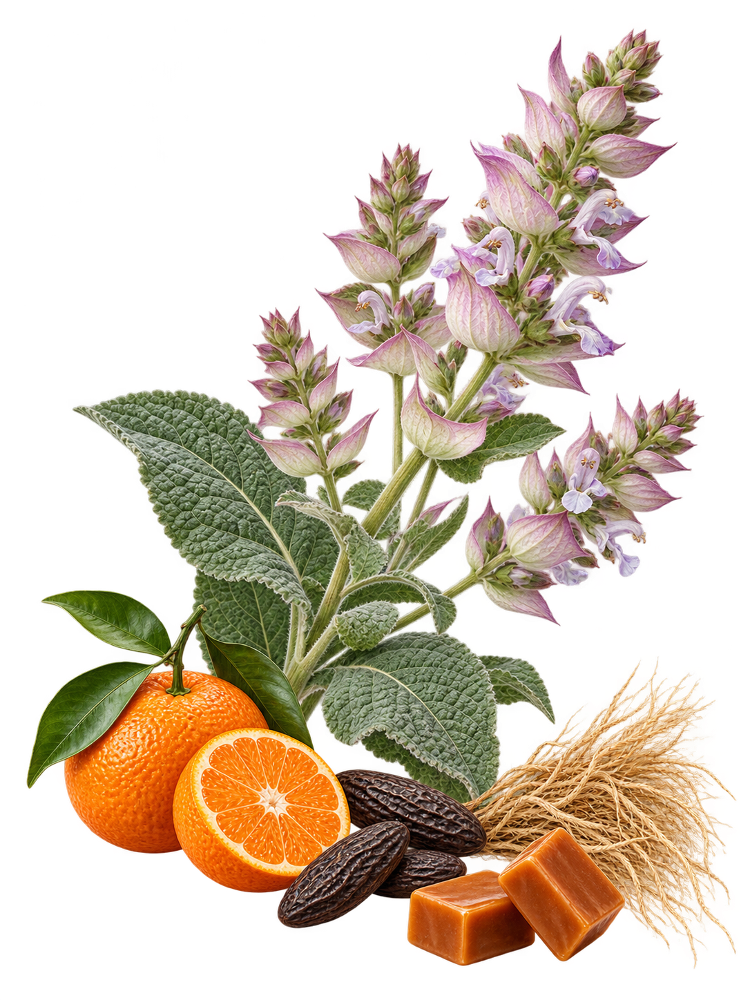

PERFUME ATLASESTUDO OLFATIVO · 04 / 05
Scandal Pour Homme
JEAN PAUL GAULTIER · EAU DE TOILETTE
Uma questão de textura

Cor
Caramelo sobre verde acinzentado.
Hora
Fim da tarde, com sombras bem desenhadas.
Textura
Cetim junto de fibra vegetal.
Gesto
Uma dobra macia com término preciso.
Sua associação
As imagens são poéticas. Você pode perceber outra atmosfera ou não se reconhecer nelas.
Representação das notas olfativas.
Não identifica os ingredientes do frasco.
Não identifica os ingredientes do frasco.